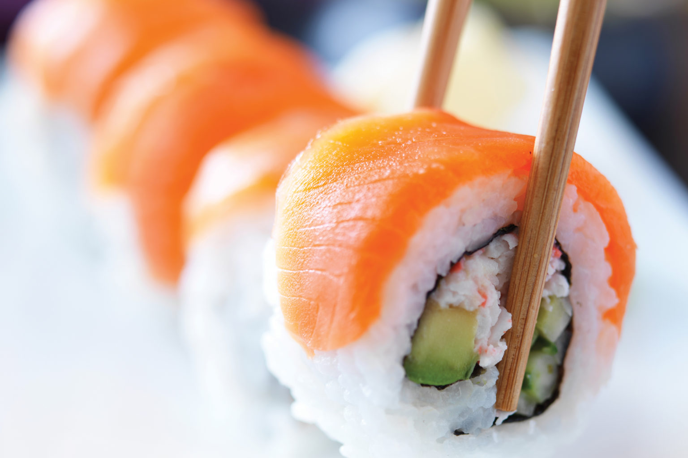
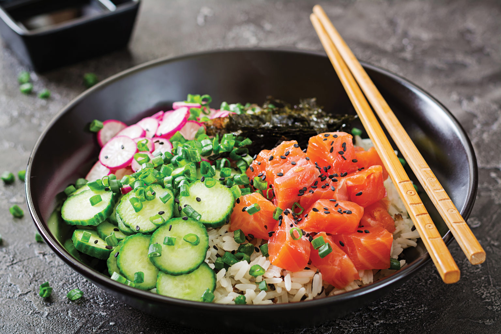
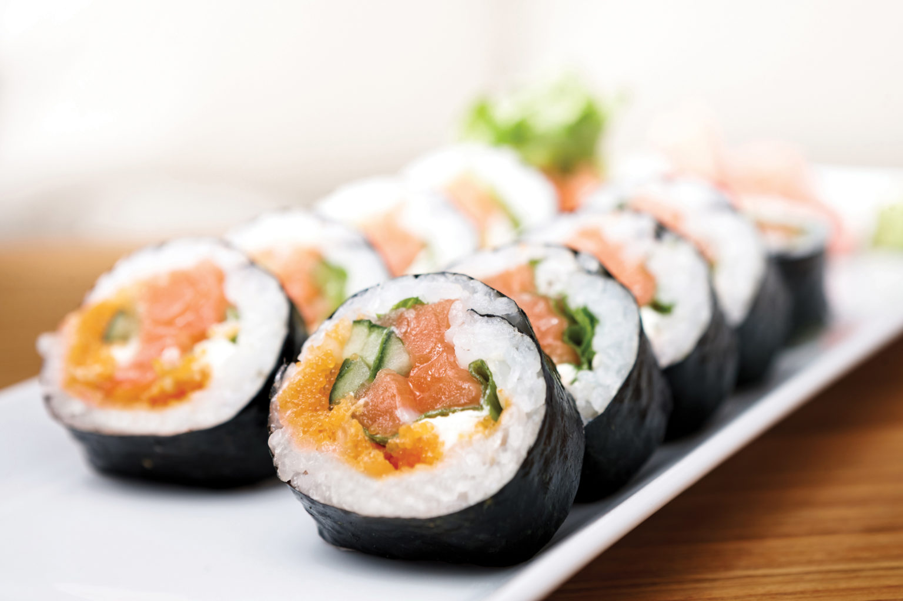

This is the delicious Salmon Roll. It is made with raw salmon, and various other ingredients. This is one of our house favorites, so we keep it at the front of our website.
This here is our famous Salmon Plate. We like to put vegitables with our fish, so that it has more flavor than normal fish. This plate will stop you from being hungry, and you can share it.
The Fish Egg Roll is one of the most famous of all the dishes we serve here at Ace Sushi. Fish eggs are put along with raw fish, and served in the classic sushi roll form factor.
We offer fresh, high-quality sushi and fusion items by specially-trained chefs in a convenient grab-and-go packages as well as made-to-order items. Over the years, we have expanded to diverse marketplaces across the globe.
In order to continually better serve our customers, ACE is regularly introducing new items to the market. Because of ever- changing consumer, tastes and needs and our forward-thinking approach, we address specific dietary need, including Koasher, gluten-free and vegetarian option as well as a position make sustainable seafood choices.
“As a single parent I like my children to have variety in their food choices but I don’t have a lot of time. I also don’t have a big budget. I also want to make sure that they are eating healthy. I have been coming to the sushi bar at my Crystal Lake market for a year. I love my chef, the sushi selection (Dragon Roll…mmmm) and the price. My kids love it because they feel it shows they have style. It’s a win all-around!”